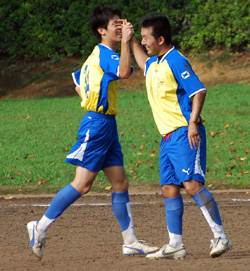
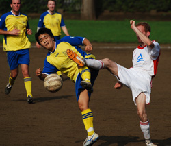
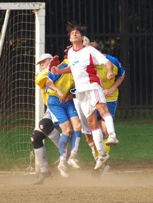
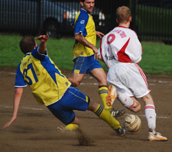

|
Yoyogi NHK, Saturday 6th Sept,
A sunny September Saturday in Yoyogi was the scene for the Geckoes second and Swiss' first TML fixture of the new season. As the teams made their way to the pitch from Harajuku station they couldn't help but notice two important events taking place nearby, first the Tokyo Girls Collection.....ah....erm...and, oh yes, more importantly of course the Brasil Festival in Yoyogi Park. At one stage we actually had to squeeze through as a drum and dance troop who had come all the way from Brazil (though looked suspiciously local) had basically blocked the road and was putting on a good pre-game show. Good start for the Geckoes even before kickoff knowing we'd be pulling on yellow kits before long.
Manager Simon Bromwell, his second game in charge, had a young team looking fit and ready to samba dance the ball right through the Swiss. A far cry from the days of old when the closest thing considered Brazilian dancing by the Geckoes was after midnight in the pong, thinking they look good in the mirror doing the robot next to (the soon to be scooped up by Ronaldo) Isabella...so I'm told! But I digress, the match was underway now with both teams trying to get a passing game going.
With ten minutes gone the Geckoes struck first, a good kick out from keeper Goro found, man of the match candidate, Kousuke on the right and he in turn played a lovely diagonal ball into the box which Taka got his head to and neatly lobbed over the oncoming keeper, 1-0. The Swiss had a very strong claim for a penalty when their left back got a hold of the ball in the box and was taken down. Perhaps Jorge (who had a great game by the way, you see this Jorge? A Great game, do refs actually read these...does anyone?) couldn't hear the shouts over the incessant drumming from next door and play went on. The Geckoes breathed a sigh of relief and proceeded to create some good chances of their own with a couple right in front of goal going just wide. The Swiss produced some good spells with Yan Vermeulen at the heart of most of their good moves, and he produced a solo effort, skipping by a couple defenders and forcing Goro into a save which he pushed behind for corner. The half ended with just the one goal.
The Swiss upped the tempo for the start of the second half and the Geckoes were on the back foot, but with the help of Gino's hard work in midfield and, captain for the day, Masa's strong defending there was no way through. There was a hint of offside for the Geckoes second, Hodaka Asami (Brazilian name 'Asa') was put through and the flag stayed down, he pushed forward and the slotted the ball past the keeper. Jorge spoke with the linesmen briefly but gave the goal in the end. Incidentally, Asa was wearing his replica Brazil shirt even though he had the choice of sporting an old Geckoes kit which was all yellow, writing and number had been worn off over the years. But how could he say no as it had worn by such legendary former Geckoes as Si Felchinho, BigBobunga, and Gaz Passionino. Fair point to him that it had probably been stretched by the legends to at least a XXXL size and they are probably more legendary for their aforementioned Motown magic than on or around the pitch. Anyway, two up and the Geckoes were starting to feel comfortable. The Swiss' best chance in the second half came when Goro accidently kicked the ball off of the back of Yan's head and the ball went out for a goal kick.
The Geckoes kept pushing and it was Asa again latching on to the ball in the box and firing home his second of the afternoon. Two other notable incidents were when, mild-mannered Kousuke, proving, in true Geckoes spirit, that he can see red and get yellow, clattered into a Swiss player earning him a booking, but after the game claimed it was accidental. Don't worry Kosuke we'll have you even if you don't do that! Also, the Swiss keeper may have been a bit lucky to stay on the pitch when he and Paul James battled for the ball and the keeper basically sat on it and time seemed to stop. When it started again, he realized he couldn’t sit on it forever, got up and a Geckoes player tried to touch it past him and he stopped it with his hand. Sounds okay aside from the fact he was outside the box, there may have been some players behind him so Jorge had mercy and only produced yellow.

All good things must come to an end, and even though that has nothing to do with this match report, the game did. The Geckoes supporters seemed happy, but rather than the good football on display it is more likely they were cheering because they had been drinking since noon for none other than the captain of the Geckoes, Jon Smith's B-day party. The Geckoes deserved their win and hearing that the drums were still playing, made their way over for some beers at the Brasil Fest before dancing (and drinking) the night away. Hopefully for the Geckoes their samba beat and feet will continue for the rest of the season.
Report by Peter Zollar
|